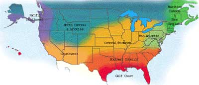

Maritime Canada & New England
The snow-covered fields are giving way and the woodcocks have returned, calling out their familiar peent. Gardens may be too wet to till in April, but spinach and lettuce seed can be sown on top of friable ground and covered with compost. Or start them in flats indoors and set them out as soon as the ground is ready. In the greenhouse, it’s time to pot up the earlier seedlings that need more room and start quick-growing annuals like nasturtiums, four o’clocks, marigolds, morning glories, asters, cosmos and zinnias. Get a jump on the winter squash and hard-shell gourds by starting them in 3- to 4-inch peat pots or 1-quart yogurt containers with drainage holes punched in the bottoms. May brings a busy month of planting greens, carrots, beets, cilantro, favas, peas and much more. A diluted fish emulsion drink for each transplant helps ease it into garden life.
- Roberta Bailey, FEDCO Seeds, Waterville, Maine.
April is when the garden really takes off. Start peas, spinach, beets, carrots and lettuce every two weeks. (Choose a spring variety of lettuce like ‘Red Salad Bowl’ or ‘Blackseeded Simpson.’) Check overwintered greens for brilliant red and black harlequin bugs and handpick before they spread. If the weather is mild, take a gamble and transplant some early tomatoes under a row cover. Thin beets and carrots two weeks after they emerge for vigorous growth, and begin hilling potatoes when they are 8 inches high. Sow watermelons, cucumbers and cantaloupe to get a jump on the season. When May comes around, switch to heat-resistant lettuces like ‘Thai 88’ and summer greens such as ‘Rainbow’ chard. Add beans, corn, cucumbers and squash to succession plantings. When the soil warms at the end of May, sow peanuts, okra, edamame (green soy beans), sweet potatoes and other hot weather crops.on’t forget to eat lots of strawberries!
- Ira Wallace, Southern Exposure Seed Exchange, Mineral, Va
After the last frost has passed, those heat-loving vegetables you started indoors can be moved outside. Many Southern gardeners say April 15 is the last chance for frost but check with your neighbors if you are new to the area. It’s time to plant seeds of warm weather crops, including beans, corn, squash, peanuts, okra, sunflowers, zinnias and marigolds. Plant fruit trees and don’t forget to label and feed them. Keep them watered during summer dry spells. On established trees, thin apple and pear fruit 6 inches apart, 4 inches for peaches and plums. Hoe and pull weeds, and start gathering grass clippings, straw or other organic materials to use for mulch. As summer heat approaches, these will serve triple-duty by providing slow-release fertilizers, keeping roots moist and cool, and suppressing the weeds
- Lori Hardee, Karen Park Jennings, Park Seed Co., Greenwood, S.C
The fight is on in the orchard. Leaf-footed stink bugs, plum curculios and brown rot fungus seem bent on consuming or befouling the fruits of your labor. Passive gardening is disappointment gardening - a block of fruit trees is not a natural system, and pest buildups are to be expected. Fight back by enriching the soil with compost and releasing beneficial insects. If populations rise beyond your tolerance point, the local Extension office can recommend organic controls. In the garden, plant some okra, southern peas, peppers and a few additional rows of green beans. Your plants should be growing actively and look vigorous and dark green. If not, perk them up with a soluble fertilizer for the short term. Then, take a break and order a load of compost or build your own compost pile
- Bill Adams, Burton, Texas
It’s April - and everything seems to be bursting out of the ground! Divide perennials now. Temperatures are not yet hot and there is occasional rain, so plants can grow without added stress. Sow spring crops such as lettuces, peas and early flowers (cosmos, Centaurea, poppies and Nigella to name a few). Harden off transplants by placing them outdoors for several hours a day. Pick a cloudy day at first, or set them in semishade in an area protected from wind. Gradually move them to a more open, sunny location, but bring them in at night unless temperatures are consistently above 40 degrees. Plants such as peppers, squash, tomatoes and basil won’t grow well without protection until soil and weather warm up. Until that happens, keep them well fertilized and in a sunny spot during the day.
- Connie Dam-Byl, William Dam Seeds Ltd., Dundas, Ontario
Spring is a great time to admit we don’t really know all that much about what is going on in our gardens. Scientists now tell us there might be as many living organisms in a single tablespoon of rich garden soil as there are humans on the planet. We don’t know all their names or relationships, but we do know that if we feed our soil friends organic matter, our garden vegetables will thrive. This is extremely important in the higher-elevation gardens because of the stress caused by increased ultraviolet sunlight. This year, experiment with different mulches and soil additives, including leaves, grass clippings, even leftover cabbage. Place these in strips in one direction, and plant rows of vegetables the other direction to discover what crops grow best with each mulch.
- Bill McDorman, Seeds Trust, High Altitude Gardens, Hailey, Idaho
Most of the Pacific Northwest is not safe from late spring frosts until May 15, but there is plenty to do in the meantime. Start now on weed control - pull, hoe or mulch weeds while they are still small to save hours of work later in the season. Sow carrots, beets, lettuce, arugula, peas, radishes, spinach and mesclun mixes. Transplant leeks, chives and brassicas (cabbage, broccoli and relatives). If you have not started these indoors, purchase several varieties with different maturity dates to extend the harvest. Consider planting extra tomatoes this season. The average American consumes 90 pounds of tomatoes a year, and they are easy to process or dry. Get some off to an early start with Wall-O-Water protectors or cut out the bottom of plastic gallon jugs and place them, lids-off, over your seedlings. But pay close attention to the temperature under there - on sunny spring days it can get too hot and stress the seedlings.
- Rose Marie Nichols McGee, Nichols Garden Nursery, Albany, Ore.; and Josh Kirschenbaum, Territorial Seed Co., Cottage Grove, Ore.
Prepare the earth for another season of plenty by feeding the microorganisms in the soil - which will in turn provide nutrients for your crops. We incorporate cover crops of winter rye, Austrian winter pea and hairy vetch, throw an inch of compost on top and fork it all into the top 4 to 6 inches of soil. This feast for the microorganisms pays off in vigorous, disease-free plants. Peppers, tomatoes and eggplants are still in the greenhouse in cooler areas and require regular foliar feedings of compost tea to keep them healthy until they can be transplanted. As night temperatures warm, plant these and other heat-loving crops outside. Meanwhile, build trellises where the climbers will be planted. Continue cutting back perennials to allow room for new growth. A side dressing of compost will help them produce beautiful blooms for you and nectar for beneficial insects
- Erica Renaud, Seeds of Change, Santa Fe, N.M
|
 |
|
|